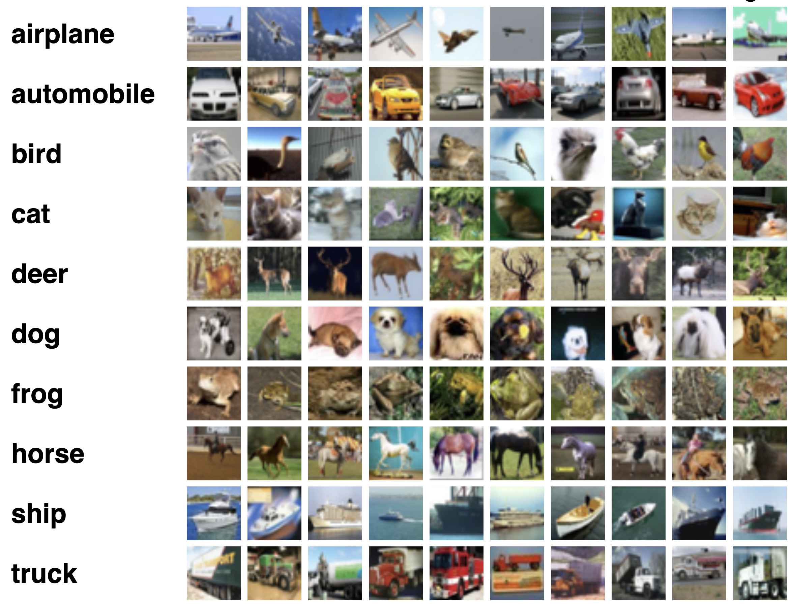
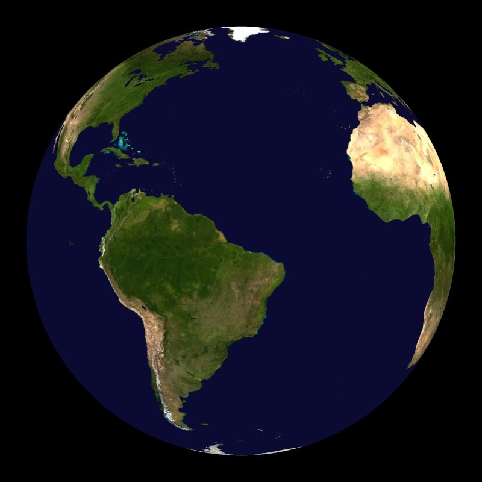

### Lifelong Learning through Random Forests [JHU](https://www.jhu.edu/): Jayanta Dey | Ali Geisa | Hayden Helm | Ronak Mehta | Will LeVine | Carey E. Priebe | Joshua T. Vogelstein <br> [Microsoft Research](https://www.microsoft.com/en-us/research/): Weiwei Yang | Jonathan Larson | Bryan Tower | Chris White  --- ### What is the task? Given a setting $s$ and $n$ samples $\mathbf{Z}\_n$ drawn according to $P$, the task $t$ is to find the algorithm that minimizes the generalization error, $$f\_n^* = \text{argmin}\_{f \in \mathcal{F}}\mathbb{E}[R\left(f(\mathbf{Z}\_n)\right)]$$ --- ### What is learning? .ye[$f$] learns from .ye[data] $\mathbf{Z}_n$ with respect to .ye[task] $t$ when its .ye[performance] at $t$ improves due to $\mathbf{Z}_n$, Define .ye[learning efficiency]: $$LE^t(\mathbf{Z}\_A, \mathbf{Z}\_B, f) := \frac{\mathcal{E}_f^t(\mathbf{Z}\_A)}{\mathcal{E}_f^t(\mathbf{Z}\_B)}$$ <br> This tells us whether we learn from $\mathbf{Z}\_A$ or $\mathbf{Z}\_B$. $f$ learns from $\mathbf{Z}_n$ with respect to task $t$ when $LE^t(\mathbf{Z}\_0, \mathbf{Z}\_n, f) > 1$. --- ### What is forward learning? - Let $n\_t$ be the last occurence of task $t$ in $\mathbf{Z}\_n$ - Let $\mathbf{Z}\_n^{< t} = \lbrace Z\_1, Z\_2, \ldots, Z\_{n_t} \rbrace$ .ye[Forward] learning efficiency is the improvement on task $t$ resulting from all data .ye[preceding] task $t$ $$FL^t\_{\mathbf{n}}(f) := \frac{\mathbb{E}[R^t(f(\mathbf{Z}^{t}\_n))]}{\mathbb{E}[R^t(f(\mathbf{Z}^{< t}\_n))]} =\frac{\mathcal{E}\_{Z\_n^t}(f)}{\mathcal{E}\_{Z\_n^{< t}}(f)}.$$ <br> $f$ .ye[forward learns] if $FL_{\mathbf{n}}(f) > 1$. --- ### What is backward learning? .ye[Backward] learning efficiency is the improvement on task $t$ resulting from all data .ye[after] task $t$ $$ BL^t\_{\mathbf{n}}(f) := \frac{\mathbb{E}[R^t(f(\mathbf{Z}^{< t}\_n))]}{\mathbb{E}[R^t(f(\mathbf{Z}\_n))]} =\frac{\mathcal{E}\_{Z\_n^{< t}}(f)}{\mathcal{E}\_{Z\_n}(f)}. $$ <br> $f$ .ye[backward learns] if $BL_{\mathbf{n}}(f) > 1$. --- ### Composable Hypotheses .center[ .ye[$h(\cdot) := w \circ v \circ u (\cdot) = w(v(u(\cdot)))$]] - Let $u$ be .ye[transformer] data to a new representation, $$ u : \mathcal{Q} \to \tilde{\mathcal{Q}}$$ - Let $v$ be .ye[voter] which operate on the transformed data outputs votes (score functions, posteriors) on all possible actions $$ v : \tilde{\mathcal{Q}} \to \mathcal{V}$$ - Let $w$ be .ye[decider] which decides which actions to take on the basis of the votes $$ w : \mathcal{V} \to \mathcal{A}$$ --- ### Learning Schemas  --- ### Simulation study  --- ### CIFAR 10x10 .pull-left[ - *CIFAR 100* is a popular image classification dataset with 100 classes of images. - 500 training images and 100 testing images per class. - All images are 32x32 color images. - CIFAR 10x10 breaks the 100-class task problem into 10 tasks, each with 10-class. ] .pull-right[  ] --- ### CIFAR 10x10 Results  --- ### Acknowledgements <!-- <div class="small-container"> <img src="faces/ebridge.jpg"/> <div class="centered">Eric Bridgeford</div> </div> <div class="small-container"> <img src="faces/pedigo.jpg"/> <div class="centered">Ben Pedigo</div> </div> <div class="small-container"> <img src="faces/jaewon.jpg"/> <div class="centered">Jaewon Chung</div> </div> --> <div class="small-container"> <div class="centered">yummy</div> </div> <div class="small-container"> <div class="centered">lion</div> </div> <div class="small-container"> <div class="centered">baby girl</div> </div> <div class="small-container"> <div class="centered">family</div> </div> <div class="small-container">  <div class="centered">earth</div> </div> <div class="small-container"> <div class="centered">milkyway</div> </div> ##### JHU <div class="small-container"> <div class="centered">Carey Priebe</div> </div> <!-- <div class="small-container"> <img src="faces/randal.jpg"/> <div class="centered">Randal Burns</div> </div> --> <!-- <div class="small-container"> <img src="faces/cshen.jpg"/> <div class="centered">Cencheng Shen</div> </div> --> <!-- <div class="small-container"> <div class="centered">Bruce Rosen</div> </div> <div class="small-container"> <div class="centered">Kent Kiehl</div> </div> --> <!-- <div class="small-container"> <img src="faces/mim.jpg"/> <div class="centered">Michael Miller</div> </div> <div class="small-container"> <div class="centered">Daniel Tward</div> </div> --> <!-- <div class="small-container"> <img src="faces/vikram.jpg"/> <div class="centered">Vikram Chandrashekhar</div> </div> <div class="small-container"> <div class="centered">Drishti Mannan</div> </div> --> <div class="small-container"> <div class="centered">Jesse Patsolic</div> </div> <!-- <div class="small-container"> <img src="faces/falk_ben.jpg"/> <div class="centered">Benjamin Falk</div> </div> --> <!-- <div class="small-container"> <img src="faces/kwame.jpg"/> <div class="centered">Kwame Kutten</div> </div> --> <!-- <div class="small-container"> <img src="faces/perlman.jpg"/> <div class="centered">Eric Perlman</div> </div> --> <!-- <div class="small-container"> <div class="centered">Alex Loftus</div> </div> --> <!-- <div class="small-container"> <div class="centered">Brian Caffo</div> </div> --> <!-- <div class="small-container"> <div class="centered">Minh Tang</div> </div> --> <!-- <div class="small-container"> <div class="centered">Avanti Athreya</div> </div> --> <!-- <div class="small-container"> <div class="centered">Vince Lyzinski</div> </div> --> <!-- <div class="small-container"> <div class="centered">Daniel Sussman</div> </div> --> <!-- <div class="small-container"> <img src="faces/youngser.jpg"/> <div class="centered">Youngser Park</div> </div> --> <!-- <div class="small-container"> <div class="centered">Shangsi Wang</div> </div> --> <!-- <div class="small-container"> <img src="faces/tyler.jpg"/> <div class="centered">Tyler Tomita</div> </div> --> <!-- <div class="small-container"> <img src="faces/james.jpg"/> <div class="centered">James Brown</div> </div> --> <!-- <div class="small-container"> <img src="faces/disa.jpg"/> <div class="centered">Disa Mhembere</div> </div> --> <!-- <div class="small-container"> <img src="faces/gkiar.jpg"/> <div class="centered">Greg Kiar</div> </div> --> <!-- <div class="small-container"> <div class="centered">Jeremias Sulam</div> </div> --> <div class="small-container"> <div class="centered">Meghana Madhya</div> </div> <!-- <div class="small-container"> <div class="centered">Percy Li</div> </div> --> <div class="small-container"> <div class="centered">Hayden Helm</div> </div> <div class="small-container"> <img src="faces/rguo.jpg"/> <div class="centered">Richard Gou</div> </div> <div class="small-container"> <img src="faces/ronak.jpg"/> <div class="centered">Ronak Mehta</div> </div> <div class="small-container"> <img src="faces/jayanta.jpg"/> <div class="centered">Jayanta Dey</div> </div> <div class="small-container"> <img src="faces/will.jpg"/> <div class="centered">Will LeVine</div> </div> ##### Microsoft Research <div class="small-container"> <div class="centered">Chris White</div> </div> <div class="small-container"> <div class="centered">Weiwei Yang</div> </div> <div class="small-container"> <div class="centered">Jonathan Larson</div> </div> <div class="small-container"> <img src="faces/brtower-180x180.jpg"/> <div class="centered">Bryan Tower</div> </div> ##### DARPA L2M <!-- Hava, Ben, Robert, Jennifer, Ted. --> {[BME](https://www.bme.jhu.edu/),[CIS](http://cis.jhu.edu/), [ICM](https://icm.jhu.edu/), [KNDI](http://kavlijhu.org/)}@[JHU](https://www.jhu.edu/) | [neurodata](https://neurodata.io) <br> [jovo@jhu.edu](mailto:j1c@jhu.edu) | <http://neurodata.io/talks> | [@neuro_data](https://twitter.com/neuro_data) </div> <!-- <img src="images/funding/nsf_fpo.png" STYLE="HEIGHT:95px;"/> --> <!-- <img src="images/funding/nih_fpo.png" STYLE="HEIGHT:95px;"/> --> <!-- --> <!-- <img src="images/funding/iarpa_fpo.jpg" STYLE="HEIGHT:95px;"/> --> <!-- <img src="images/funding/KAVLI.jpg" STYLE="HEIGHT:95px;"/> --> <!-- <img src="images/funding/schmidt.jpg" STYLE="HEIGHT:95px;"/> --> --- background-image: url(images/l_and_v.jpeg) .footnote[Questions?]